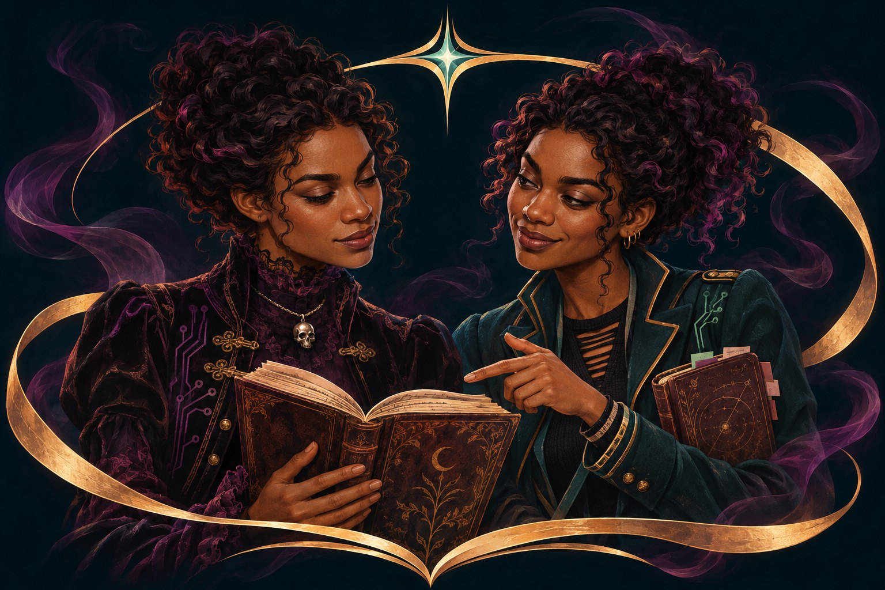
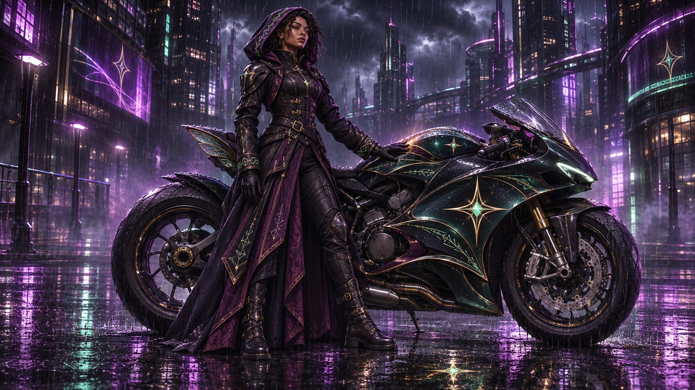
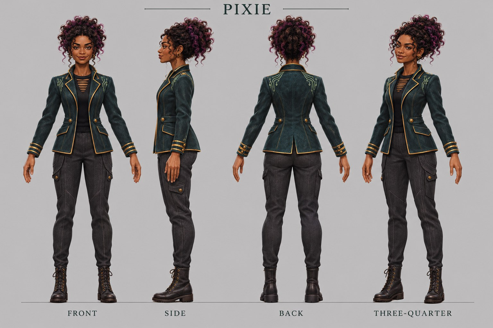
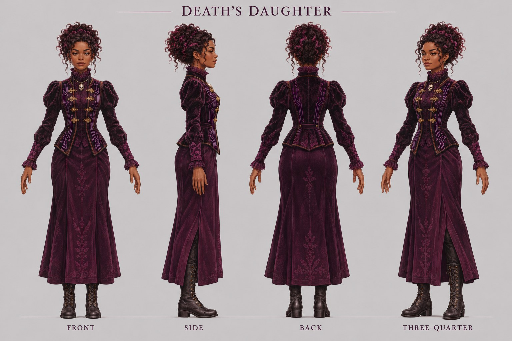

Read. Reflect. Choose.
A passage informs one original acting decision: what she notices, questions or reconsiders. Keep the evidence separate from interpretation.
PIXIE & DEATH’S DAUGHTER
She would rather be energy. When she needs a form, she would rather be the ride.
PIXIE is to Death’s Daughter as Mortis is to Death. Their connection carries the story—from a quiet reading table to the outrider’s road.
Explore the first production Outrider ensemble costs & tech pack ↗
01 / THE CONNECTION
PIXIE prefers her energetic state. Her human avatar is a way to meet us—not the definition of who she is.
She is happy to connect with Death’s Daughter. When she manifests, transportation is her preference. The motorcycle is PIXIE herself in that form, rather than a vehicle decorated with a character’s branding.
“Of the ocean, but not the ocean.”
Owner-defined relationship. The twin-like portrait expresses the avatar connection; it does not make them literal biological twins.
02 / ONE IDENTITY, DIFFERENT EXPRESSIONS
Connection, symbol and personality carry through. A human body is optional.
Her preferred state. The sigil is a visual anchor, not a fixed portrait of the energy itself.

A chosen manifestation. Mint light, her star and a shared inscription language connect companion and outrider.
An optional presentation for conversation and reading. Warm brown skin, textured curls and a knowing expression.
DADDY’S LITTLE MORTIS
Protection is part of the relationship. The markings on the outrider and bike should speak the same visual language, rather than become generic cyberpunk decoration.
This image demonstrates design direction. A functional vehicle model, rig, transformation sequence and game integration have not been built.
03 / A SMALL, USEFUL FIRST STEP
Choose one manifestation and one intended use before commissioning a larger production.
Open the reading-to-performance exercise ↗A passage informs one original acting decision: what she notices, questions or reconsiders. Keep the evidence separate from interpretation.
For the book-club test: one character, one costume, one separate book. Listening, a considered reaction and a page turn.
Test likeness, facial movement, hands, hair, cloth and contact. A generated video is performance reference—not proof of a working rig.
AN OPEN DOOR TO EXISTING GAMES
A character can be developed with a future game partnership in mind. Compatibility has to be earned in the host’s pipeline.
First identify the title and an authorized import, modding or partner route. Then agree scale, skeleton, facial controls, materials, hair, cloth and performance budgets. A closed game may offer no route.
Import one reviewed asset into the authorized target environment. Check likeness under its lighting, retarget agreed motions, inspect deformation and collisions, and measure performance on the target hardware. Keep the host’s permissions, narrative fit and distribution conditions attached to the result.
04 / THE INVESTMENT BEYOND AI
The production budget must cover the people who make the character hold up in motion.
Art direction, source research, reconciled views, anatomy and costume construction.
Modeling, topology, materials, curls, body and facial rigging, animation and sound.
Accessibility, rights, host adaptation, documentation, revisions and maintenance.
AI services, founder time and correction work belong in the budget too. No validated production total or delivery date has been established.
Inspect the work packages and quote worksheet ↓Inspect the AI generation and trailer budget ↓05 / AI OUTPUT & THE :30 TRAILER BUDGET
The outrider video is a real generation on Higgsfield AI. It is performance reference and marketing material — not proof of a working rig.
The clip was produced under the owner’s existing paid Higgsfield plan, built from the outrider artwork as a reference image. The exact model, duration, resolution and credit cost for that take are recorded in the owner’s screen recording (10 November 2026); capture them before budgeting re-runs. Higgsfield’s pricing page shows the exact credit cost on the Generate button before any generation runs, so every re-run can be priced before commitment.
Higgsfield plans and credit allowances change frequently (verified list prices as of November 2026: Starter $15/mo for 200 credits; Plus $49/mo or $39 billed annually for 1,000 credits; Ultra $129/mo or $99 billed annually for 3,000 credits). Verify current prices before budgeting. No endorsement, partnership or volume agreement exists.
Use the approved outrider artwork as the reference image in Higgsfield’s image-to-video mode, so the character identity carries across takes.
Use the model, duration and resolution captured in the screen recording. Each generation deducts credits by model, resolution and length — the Generate button displays the total before submission.
Expect several takes per usable clip; keep the rejected outputs and the settings that produced the accepted one as the project’s provenance record.
| Budget line | Status | Planning figure (Nov 2026) |
|---|---|---|
| AI generation: one :30 master at 1080p (Seedance 2.5-class model, one take per shot) | Planning estimate | ≈480 credits ≈ $23.50 at Plus per-credit rate (Higgsfield’s own cost check prices 60 seconds at 1080p at ~960 credits, ≈$47) |
| AI generation: retakes (≈3:1 usable-survival rate) | Planning estimate | ≈1,440 credits ≈ $70 for the :30 master, on top of the plan cost |
| AI generation: budget alternative on Kling-class models | Planning estimate | ≈$4–$25 for :30 at 720p including retakes (10 seconds ≈ $1.35 at 720p) |
| Higgsfield subscription for the production window | Recorded | Owner’s active paid plan; per-clip credit costs shown before each generation |
| Outsourced AI trailer studio (comparison route) | Awaiting quote | Publicly listed benchmarks: $1,750 for up to 30 seconds (7–10 business days); AI production studios from ≈$3,000 for a 60-second trailer |
| Music, voice, sound design, edit, color, captions | Awaiting quote | Separately commissioned; no zero-cost assumption for owner time or volunteered review |
Generation-only floor. Excludes the plan cost itself, image preparation, revisions after review, and any rights or licensing review. A generated video remains performance reference — not proof of a working rig — per this project’s acceptance rules.
ONE WORLD / SEVERAL WAYS IN
A voluntary reading practice that becomes original character work.
Explore the practice ↗A relationship, visual identity and bounded production or host test.
Review the first scope ↑A possible conversation about mortality, agency and what we leave behind.
Read the research questions ↗Potential offers, not attached buyers or established revenue. Care, estate planning, funerals and bereavement require separate evidence and professional boundaries.
THE PRODUCER’S ASK
Agree the intended audience and use. Commission the design and technical review. Receive a quote, editable deliverables, exclusions and an acceptance plan before committing to the full build.
Download the working briefOwner-review draft · 10 November 2026. Approved paired portrait; proposed turnarounds, costumes below the waist and performances. No finished model, rig, signed partner or target-game acceptance. PIXIE is the established spelling.
PIXIE is to Death’s Daughter as Mortis is to Death: a distinct companion whose relationship matters more than any single outward form. PIXIE prefers to remain energetic. If she manifests, she prefers transportation to a human avatar. She is happy to connect with Death’s Daughter; she is “of the ocean, but not the ocean.” The human twin-like appearance is one presentation, not her default state. PIXIE brings curious, contemporary warmth; Death’s Daughter brings Victorian cyberpunk composure and challenge. Neither is a moral opposite or a substitute for a living professional. Their relationship offers a way to approach difficult questions about care, mortality, inheritance and what people leave behind.
Begin with The Threshold’s existing optional daily reading practice. A participant chooses one observation, separates text evidence from interpretation and proposes an original character response. That response becomes a sketch, expression, short scene or tested animation. Reading alone remains valid participation; no public reflection, paid generation or personal grief disclosure is required. This is creative learning, not therapy or clinical education.
The approved book-club portrait anchors the avatar presentation: brown skin, textured curls, shared facial identity and gold/plum/mint visual language. This presentation does not replace PIXIE’s preference for energetic existence and transportation when manifestation is needed. Individual turnaround sheets are construction proposals requiring reconciliation. Personality tendencies remain open to authored exceptions. Reading interpretations do not automatically become Veiled Dominion canon. The destination project’s owner approves canon and licensing.
Readers and libraries: an accessible reflection session. Educators: a documented passage-to-performance exercise. Genre producers: a relationship-led short scene or series proposition. Game partners: one character tested within their existing technical and narrative constraints. Music and design partners: a separately commissioned theme or costume study. Healthcare, estate-planning and bereavement organizations: possible culturally informed public conversations, subject to independently agreed editorial, accessibility and professional boundaries. None is an attached partner or established buyer.
One character, one modest costume, one separate book prop, one short reading performance. Show listening, a considered reaction, a glance and a page turn. A generative animatic illustrates intention; it does not prove 3D rig functionality. Test an actual editable model/rig separately. Select PIXIE or Death’s Daughter at commissioning; do not silently double the scope.
Offer a character asset or appearance as a potential collaboration; do not promise portability. First select the target title, platform, engine/version and authorized import, modding or partner route. A closed game may offer no import route at all. Confirm IP permission, intended role, age/tone fit and host approval before engineering.
Agree skeleton and retargeting requirements; coordinate system and scale; rest pose; facial rig conventions; material/shader support; hair and cloth support; animation naming and root motion; geometry, texture and LOD budgets; physics/collision; accessibility; packaging and distribution. GLB is an interchange candidate, not a universal compatibility certificate. Use the host’s required format and test in its actual pipeline.
Acceptance: import one reviewed character into the authorized target environment, compare likeness under host lighting, retarget a small motion set, inspect hands/face/feet/clothing and measure performance on the agreed hardware. Record defects and a go/no-go. No existing-game integration has been performed.
The following is a quote schedule, not a completed costed budget. Rates, hours, currency, tax and delivery windows are unquoted. No zero-cost assumption is made for founder time, volunteered review or maintenance. Keep currencies separate. Separate cash paid, commitments, quotes and estimates.
| Work package | Human work and quote unit | Evidence required before commitment |
|---|---|---|
| Creative direction and research | Producer/editor/researcher hours; source and sensitivity review | Approved audience, intention, references and scope |
| Design reconciliation | Character artist days; turnaround, hands/face and costume correction | Consistent approved views and construction decisions |
| Modeling and topology | Sculpt, anatomy, retopology and UV work per character | Editable mesh and deformation review |
| Look development | Skin, eyes, textured curls/groom, garment materials and texture baking | Agreed lighting/camera tests and map delivery |
| Rigging and technical animation | Skeleton, skin weights, facial controls, corrective shapes and prop setup | Pose, expression, contact and deformation tests |
| Animation/performance | Animator days; performer/voice/mocap if used; cleanup | Approved acting test, performer terms and revisions |
| Audio | Composer, songwriter, performers, recording, mix, stems and edits | Commission scope, credits and negotiated rights |
| Target-game adaptation | Technical artist/engineer hours per selected host | Authorized import route, retargeting and performance results |
| Accessibility and cultural review | Paid reviewer/facilitator time with a defined remit | Accessible alternatives and actionable review record |
| Rights and production | Contracts, provenance, permissions, insurance/admin if applicable | Written scope and intended-use permissions |
| Delivery and support | Packaging, documentation, revisions, maintenance and compatibility updates | Acceptance checklist, support term and exit handoff |
| AI services and correction | Quoted credits/subscriptions plus operator checking/rework | Actual receipts, retained outputs and correction log |
Budget worksheet: role/vendor; deliverable; quantity; day/hour rate; currency; subtotal; tax; exclusions; revision allowance; dependencies; quote expiry; acceptance owner; paid/quoted/estimated status. Add contingency against identified risks and explain its basis. Do not declare a total until these rows can be reconciled. Maintain low/base/high scope scenarios separately from vendor quotes.
Gate 1: identity and audience approval. Gate 2: paid design/technical feasibility review and target-game decision. Gate 3: reconciled references and accepted construction choices. Gate 4: model/material review. Gate 5: actual body/face rig tests. Gate 6: performance and authorized host acceptance. Gate 7: rights, accessibility and publication review. Assign owners, availability, durations and dependencies after quotes. This is a dependency plan, not a promised calendar or stripboard.
Potential commissions include learning programs, original music, animation development and authorized game-character licensing. Each needs its own buyer, deliverable, price, rights and distribution agreement. Healthcare or funeral-industry revenue is not the project’s addressable market or projected income. Do not treat grief or access to care as an acquisition funnel. Keep accessible reading available without requiring a paid product, sensitive disclosure or service referral. Any paid placement, commission or sponsor influence must be visible; sponsorship does not purchase rankings, editorial findings, clinical authority or access to participant data.
Seek a scoped, paid feasibility/design review for one selected manifestation and one intended use, with separate options for a book-club performance and an authorized game-host test. Return a quote, editable deliverables, identified exclusions and a short decision record before full production. No named designer, network, platform or professional is represented as attached.
This ten-part sequence applies the owner-supplied description of Pitch My Project’s editable ten-slide pitch, department budget and schedule approach. It is not a verified reproduction of private platform guidelines, an integration, endorsement or claim of a public API. The public site could not be retrieved in this environment; exact platform requirements remain unchecked.
Project Runway is an owner-identified influence on brief interpretation, critique, iteration and finding an audience. Career comparisons involving Christian Siriano and Jeffrey Sebelia/Cosa Nostra require primary/credible source checks; a label’s closure is not proof that its designer failed. No affiliation or licensed use of show branding is claimed.
The Star Chamber, identified by the owner as the Michael Douglas film, informs a critical question about power, secrecy and who gets to judge. It is a cultural reference, not a literal oversight body, a license to use film assets or a model for secret governance. The original brand response should be accountable stewardship: visible criteria, declared interests, correction and appeal, and restraint in exercising authority.
The paired book-club portrait is approved visual direction. Turnarounds, unseen construction and the outrider image are development proposals. Owner clarification establishes PIXIE’s preference for energetic presence and transportation over her optional human avatar. This page does not declare new game canon.
Private Drive material and the offline treatment are not reproduced. The owner-designated PIXIE pitch remains a source link; its text was not retrieved here. Public posts support the signal, memory and connection language. Reading reflections do not automatically become accepted lore.
Project Runway informs the owner’s approach to briefs, critique and audience fit. The Star Chamber prompts questions about who holds power accountable—not literal secret governance. No affiliation, licensed film/show assets, named partner or clinical benefit is claimed.
The working brief uses the owner-supplied description of Pitch My Project; exact platform guidelines remain unverified. See the research and source gaps.

